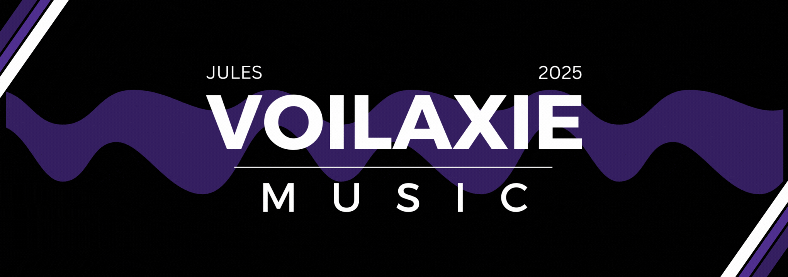
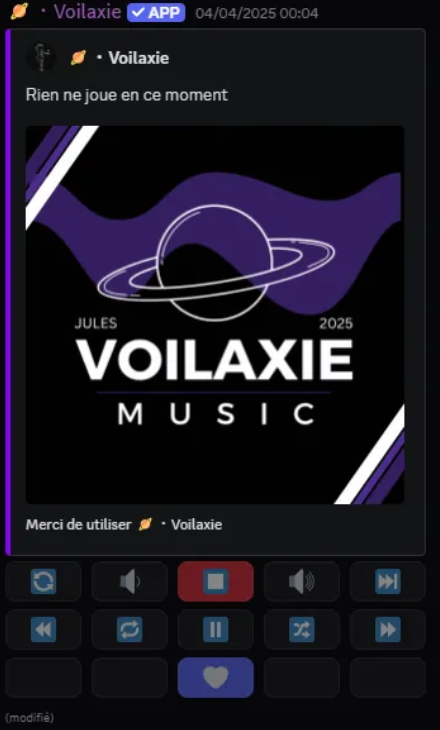

Étude de cas · Bot musical Discord
Voilaxie Music
- Archivé
- 2026
- Environ 300 serveurs
Contexte
Tout est parti d’un serveur Discord entre amis. On voulait écouter de la musique ensemble et on avait ajouté plusieurs bots musicaux. Le problème : peu d’options, peu de plateformes prises en charge, des fonctions importantes payantes, un son de mauvaise qualité, des bugs. Et les bots les plus connus n’étaient pas intuitifs. J’ai donc lancé Voilaxie avec un ami : un bot gratuit, de bonne qualité, simple à utiliser, pour que tout le monde puisse écouter de la musique entre amis sans se battre avec l’outil. Il lisait des morceaux depuis toutes les grandes plateformes : Spotify, Deezer, YouTube, SoundCloud, Apple Music.
Ce que j’ai fait
Je l’ai développé avec un ami, puis je l’ai exploité et fait évoluer jusqu’à environ 284 serveurs. [À COMPLÉTER : ta part précise, par exemple design, traductions, filtres, système premium, hébergement.] Le bot propose un mode 24/7, des filtres audio et un égaliseur, la lecture automatique de suggestions, des playlists personnalisées, un rôle DJ, un salon de demandes musicales et des boutons de contrôle directement dans le message.
Le bot lit Spotify, YouTube, Deezer, Apple Music, SoundCloud et des radios en ligne.
- Mode 24/7, filtres audio et égaliseur.
- Suggestions en lecture automatique et playlists personnalisées.
- Rôle DJ et salon dédié aux demandes musicales.
- Boutons de contrôle intégrés au message du lecteur.
Il compte environ 58 commandes et est disponible en plusieurs langues.

Technologies
- Node.js
- discord.js
- Lavalink · Shoukaku
- SQLite
- Sharding automatique
Pourquoi il est arrêté
J’ai arrêté Voilaxie après un désaccord avec la personne qui m’aidait à le développer. Nous n’avions pas la même façon de travailler : des décisions prises sans concertation, une identité visuelle qui n’était plus respectée. J’ai mis fin à la collaboration et le projet s’est arrêté. J’en retiens qu’il faut fixer des règles de travail claires dès le départ : qui décide de quoi, et qui valide l’identité du projet.
Prochaine étape
Je compte relancer Voilaxie sur de meilleures bases, avec la qualité qui a toujours été la sienne : un site web connecté à Discord pour contrôler le bot de son serveur, comme un Spotify collectif, une application directement intégrée à Discord, et un usage maximal des nouveautés de la plateforme.